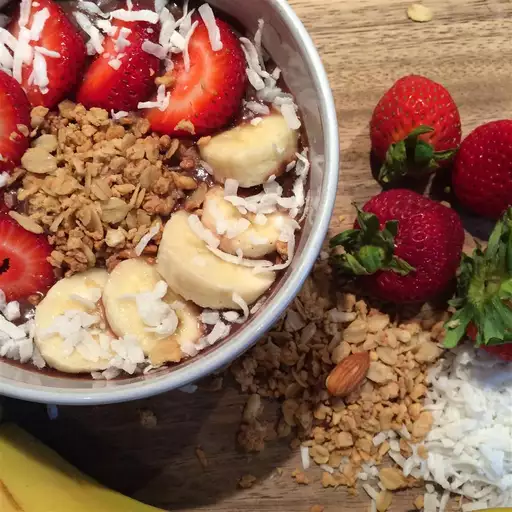

Açai Bowl

Encountered this dairy-free açai bowl recipe in hawaii. It was very good!
Ingredient list
- 1 cup acai berry sorbet.
- 2 tablespoons granola, or as desired.
- 4 strawberries, sliced.
- 1 banana, sliced.
- 2 teaspoons unsweetened coconut flakes, or as desired.
- 1 teaspoon honey, or as desired.
Directions
- Place the acai sorbet into a bowl and top with a layer of granola.
- Line strawberry and banana slices over granola.
- Sprinkle with coconut flakes and drizzle with honey.
Nutrition facts (per serving)
- Calories: 551
- Fat: 13g
- Carbs: 108g
- Protein: 4g